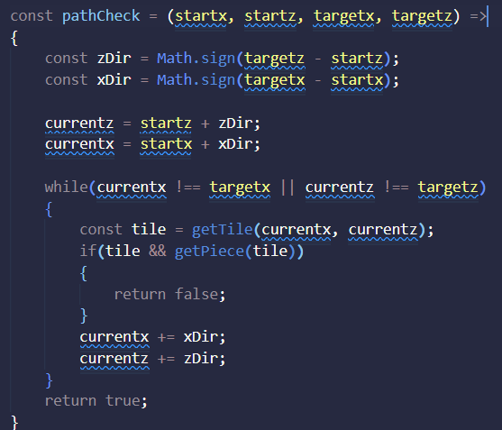
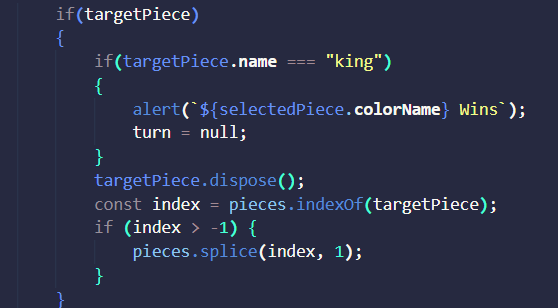

Firstly, I added turns to the chess game. I set up a variable, set the variable to alter between white and black each move, and prevented wrong turn selection
Then I knew I needed my move validation, so I created a function to return true if a valid move is registered and false otherwise. I added x and z position variables to have an easier time using the position of the target and the current tile selected I also made a getPiece function to get the piece on a given tile in order to use later and also to prevent own capture by finding the piece on the destination tile and determining if its the same color within the target piece variable. I also added a color attribute to every piece so I can find their color easier

Then I knew I needed a way for pieces to check if something was in their path. So i created a pathcheck function that loops through all the pieces and tiles, using the position variables of the target and start as bounds. The sign of the difference of the start and target is the direction the piece is moving and is used to iterate the for loop and my current pos variables. However, I realized I needed the tiles to use my get piece function to see if there is a piece in the way, so I created a getTile function that gets the tile at a certain x and z on the board.
Then I wanted to make sure pieces are removed from the game when captured, so I created a check to see if there was an opposite color piece on the target tile and then used the dispose babylon function to get rid of the target mesh and also spiced it from the array of pieces. If the target piece is the king, then the game ends with an alert saying who won. I also finished my pawn capture logic (I removed the disposing of the piece from this after taking the screenshot)
Finally, I changed the base models of the pieces to be more detailed.
This chess game implements basic chess rules and validation not including special rules and also ends the game upon king capture and displays the winner.
I found this assignment very similar to our react assignment and much of my logic is almost copied from it. It was difficult to think of how to Path check this time around and visualize the chess game in 3D however because there were tiles to keep track of as well as the pieces this time. I feel like this time around once I knew how to get each tile and piece and how to read the base functions, I implemented the logic relatively fast as it is almost the same to our other previous chess games.